DESIGN READ: premium consumer landing for design-conscious global MZ (25-35), technical-editorial language family, native CSS + serif/mono pairing + restrained motion. Occult-banned (brand law), trust-first (finance-adjacent). 20 concepts across 5 families: Data-Editorial (01/03/09/14), Brutal-Print (02/05/11/13), Korean-Quiet (06/12/16/20), System-Grid (07/15/18/19), Warm-Editorial (04/08/10/17).
01
V/M/D 6/4/4
Hanken Grotesk + Space Mono
#F4F1EC / #111 / #FF4D00
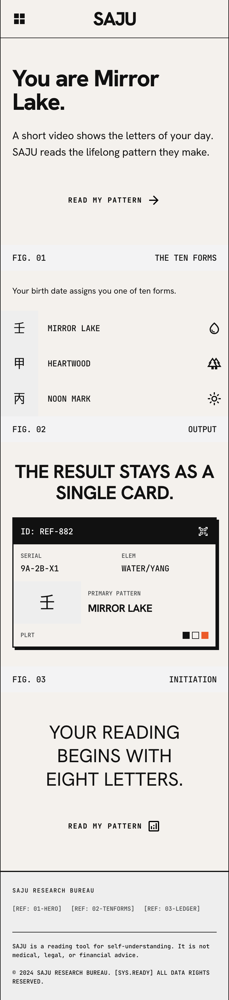
02
V/M/D 8/5/4
Archivo Black + IBM Plex Mono
#F4F1EC / #111 / #FF4D00
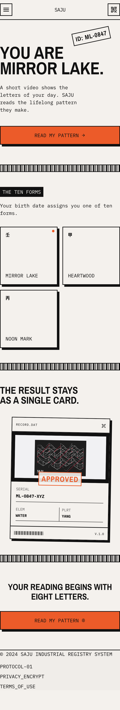
03
V/M/D 5/3/3
Space Mono + Hanken
#EFEAE3 / #1B3A5C / #C4501B
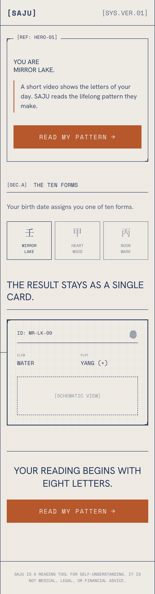
04
V/M/D 5/3/3
Playfair + Source Sans
#FBF9F5 / #1A1815 / #B8433A
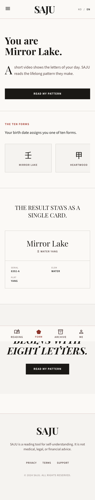
05
V/M/D 9/6/3
Archivo Black + Archivo
#FFFFFF / #111 / #FF4D00
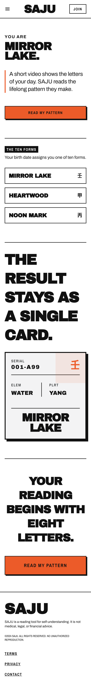
06
V/M/D 4/3/2
Noto Serif KR + Noto Sans KR
#F7F3EA / #2B2724 / #8A3325
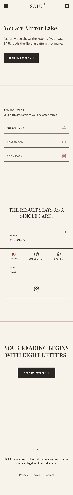
07
V/M/D 7/5/5
Hanken + Space Mono
#F2F0EB / #111 / #2E5E4E
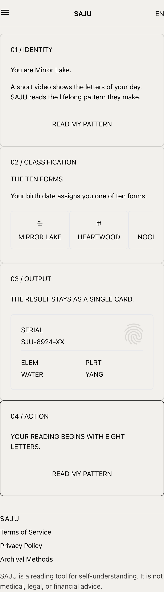
08
V/M/D 6/4/2
DM Serif Display + DM Sans
#FAFAF8 / #141414 / #9A3B26
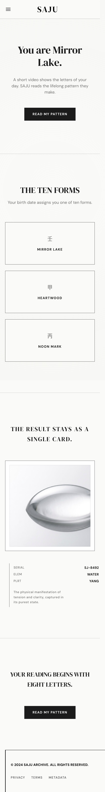
09
V/M/D 7/4/5
JetBrains Mono + Hanken
#F4F2ED / #16161A / #C4501B
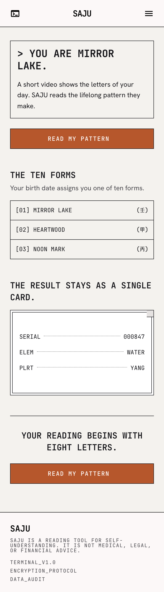
10
V/M/D 6/5/3
Fraunces + Karla
#F6F1E7 / #33261F / #C05B2E
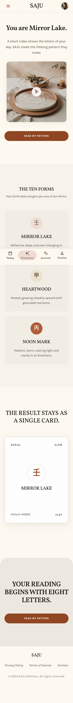
11
V/M/D 9/7/4
Syne + Space Grotesk
#F0EEE9 / #111 / #FF4D00
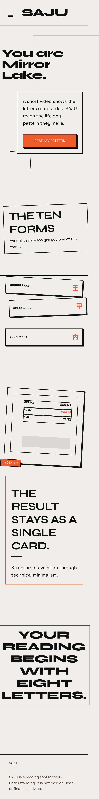
12
V/M/D 5/3/3
Libre Baskerville + Work Sans
#F5F2EC / #1C1A17 / #8A3325
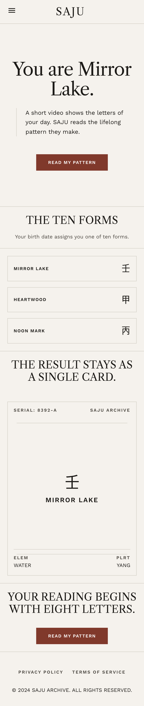
13
V/M/D 8/5/3
Space Grotesk + Space Mono
#F4EFE6 / #1A1A1A / #E8542F
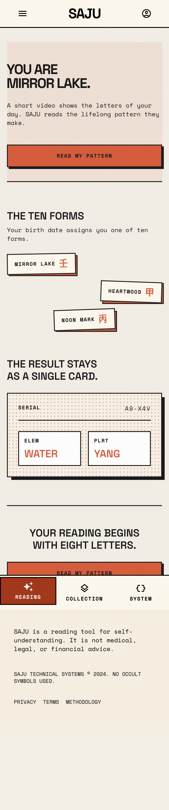
14
V/M/D 6/4/5
IBM Plex Sans + Mono
#F2F1ED / #111 / #1B5CB8
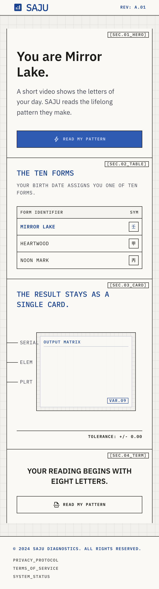
15
V/M/D 8/6/3
Nunito + Space Mono
#FFFDF7 / #111 / #FF6B35
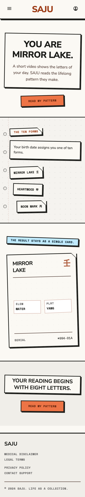
16
V/M/D 7/4/3
Space Mono + Hanken
#FAFAF7 / #111 / #D93A1F
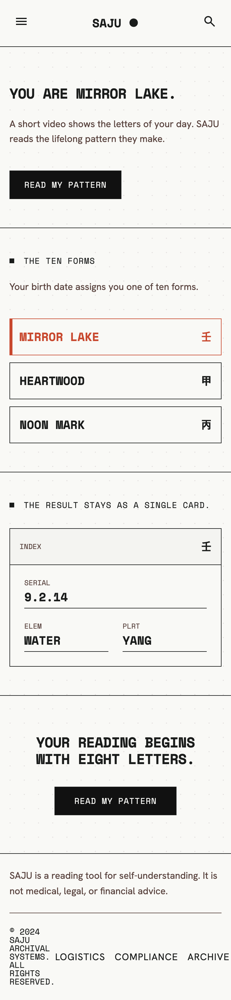
17
V/M/D 7/6/3
Fraunces + Inter
#F7F4EE / #191613 / #B8433A
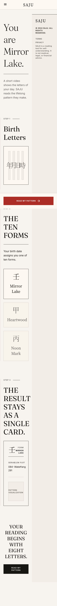
18
V/M/D 7/5/4
Bitter + Source Sans 3
#F3F0E9 / #26221D / #3A6B4F
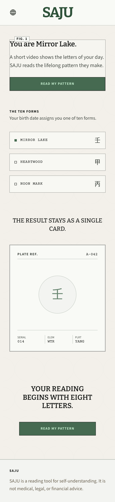
19
V/M/D 6/4/3
Sora + Space Mono
#F4F4F2 / #16181D / #1B5CB8
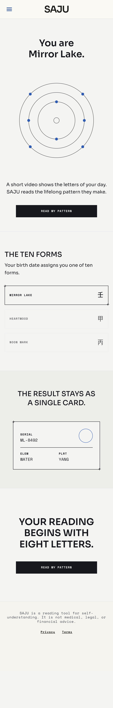
20
V/M/D 5/3/2
Playfair + Karla
#FAF8F4 / #141210 / #8A3325
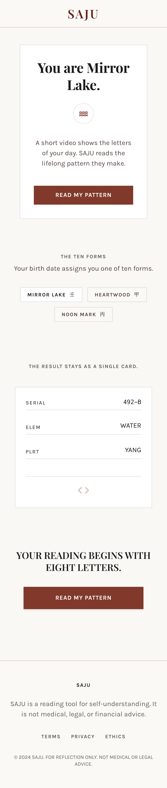